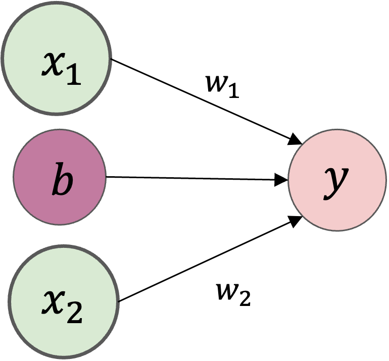
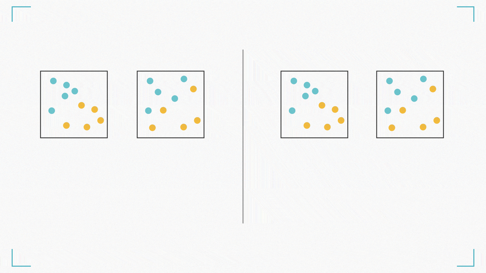
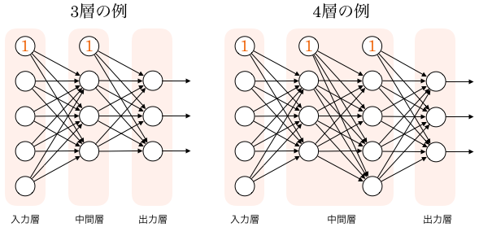
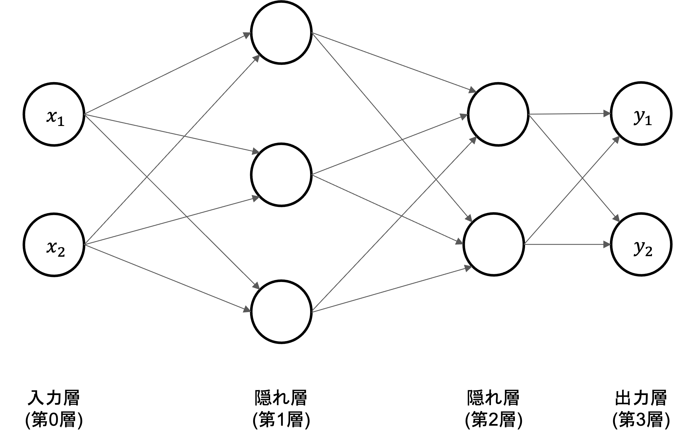
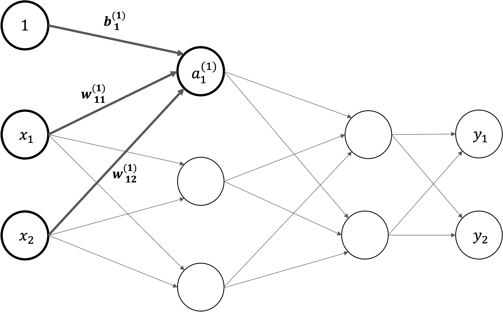

ニューラルネットワーク
Contents
ニューラルネットワーク#
ニューラルネットワークは、人間の脳に似た層状構造で相互接続されたノードやニューロンを使用するの計算モデルです。
ニューラルネットワークは、画像認識、自然言語処理、音声認識など、さまざまな領域で広く利用されています。特に、大量のデータと計算能力が利用可能になった近年、ディープニューラルネットワーク(DNN)の研究や応用が急速に進展しています。
ニューラルネットワークの構造#
パーセプトロン#
パーセプトロンとは、複数の入力を受け取り、重み付けして、1つの信号を出力するアルゴリズムです。
例えば,\(x_1\)と\(x_2\)の2つの入力を受け取り、yを出力するパーセプトロンを考えます。
\(w_1\)や\(w_2\)は各入力の「重み」を表すパラメータで、各入力の重要性をコントロールします。
\(b\)はバイアス

パーセプトロンの「○」で表されている部分は、ニューロンやノードと呼びます。
活性化関数#
活性化関数とは、ニューロンにおける、入力のなんらかの合計から、出力を決定するための関数です。
例えば、関数の入力(パーセプトロンだと重み付き和)が0以下のとき0を、0より大きいとき1を出力することが考えます。
出力に関する計算数式を分解すると、
で書けます。つまり、入力の重み付き和の結果が\(a\)というノードになり、そして活性化関数\(h()\)によって\(y\)という出力が計算されます。

活性化関数を使うことで表現の自由度を上げて、複数のパーセプトロンを適当につなげることで、入出力間が非線形な関係でも表現できるようになります。
例えば、線形変換のみで下図右の白い丸で表される観測データから\(x\)と\(y\)の関係を近似した場合、点線のような直線が得られたとします。これでは、一部のデータについてはあまりよく当てはまっていないのが分かります。
しかし、もし図右の実線のような曲線を表現することができれば、両者の関係をより適切に表現することができます。

活性化関数にはいくつか種類があります。
活性化関数にはいくつか種類があり、異なる特性や用途を持っています。

ニューラルネットワークの仕組み#
ニューラルネットワークの仕組みは下の図で表さます。左側から、最初の層を入力層 (input layer)、最後の層を出力層 (output layer)といいます。
その間にある層は中間層 （intermediate layer) もしくは隠れ層 (hidden layer) といいます。中間層において、層の数を増やすことによって、ディープニューラルネットワークを実現することができます。
ニューラルネットワークは、層から層へ、値を変換していきます。 そのため、ニューラルネットワークとはこの変換がいくつも連なってできる一つの大きな関数だと考えることができます。 従って、基本的には、入力を受け取って、何か出力を返すものです。 そして、どのようなデータを入力し、どのような出力を作りたいかによって、入力層と出力層のノード数が決定されます。
ここで、層と層の間にあるノード間の結合は、一つ一つが重みを持っており、上のような全結合型ニューラルネットワークの場合は、それらの重みをまとめて、一つの行列で表現します。

ニューラルネットワークの計算#
それでは、下図に示す\(3\)層ニューラルネットワークを例として、入力から出力への計算のについて解説を行います。

記号の説明#
ニューラルネットワークの計算を説明するにあたって、導入される記号の定義から始めます。
入力層の\(x_1\)と\(x_2\)ニューロンから、次層のニューロン\(a_1^{(1)}\)への信号伝達を見ていきます。
\(w_{12}^{(1)}\) は前層の\(2\)番目のニューロン(\(x_2\))から次層の\(1\)番目のニューロン(\(a_1^{(1)}\))への重みであることを意味します。
右上\((1)\)は第\(1\)層の重みということ意味します
右下\(12\)ような数字の並びは、次層のニューロン(\(1\))と前層のニューロンのインデックス番号(\(2\))から構成されます
\(a_1^{(1)}\)は第\(1\)層\(1\)番目のニューロンであることを意味します。
右上\((1)\)は第\(1\)層のニューロンということ意味します
右下\(1\)は\(1\)番目のニューロンということ意味します

各層における信号伝達#
まず、入力層から「第\(1\)層の\(1\)番目のニューロン」への信号伝達を見ていきます。ここでは。バイアス項も追加し、\(a_1^{(1)}\)を以下の数式で計算します。

同じ形で、第\(1\)層におけるすべでのニューロンの計算式を書けます。 $\( \begin{split}\begin{cases} a_1^{(1)} = w_{11}^{(1)}x_{1} + w_{12}^{(1)}x_{1}x_{2} + b_1^{(1)} \\ a_2^{(1)} = w_{21}^{(1)}x_{1} + w_{22}^{(1)}x_{1}x_{2} + b_2^{(1)} \\ a_3^{(1)} = w_{31}^{(1)}x_{1} + w_{32}^{(1)}x_{1}x_{2} + b_3^{(1)} \end{cases}\end{split} \)$
行列で第\(1\)層におけるニューロンの計算式をまとめて表すことができます。
入力 \(\mathbf{X}=\begin{pmatrix} x_1 & x_2 \end{pmatrix}\)
バイアス \(\mathbf{B} = \begin{pmatrix} b_{1}^{(1)} & b_{2}^{(1)} & b_{3}^{(1)} \end{pmatrix}\)
重み $\(\begin{split} \mathbf{W} = \begin{pmatrix} w_{11}^{(1)} & w_{21}^{(1)} & w_{31}^{(1)} \\ w_{12}^{(1)} & w_{22}^{(1)} & w_{32}^{(1)} \end{pmatrix}\end{split}\)$
入力・バイアスと重みの総和: \(\mathbf{A} = \begin{pmatrix} a_1^{(1)} & a_2^{(1)} & a_3^{(1)} \end{pmatrix}\) $\( \mathbf{A}^{(1)} = \mathbf{X} \mathbf{W}^{(1)} + \mathbf{B}^{(1)} \)$
さらに、活性化関数を導入します。入力・バイアスと重みの総和を\(a\)で表し、活性化関数\(h()\)による変換された結果を\(z\)で表すことにします。
Note